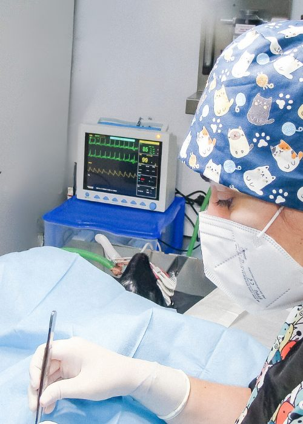
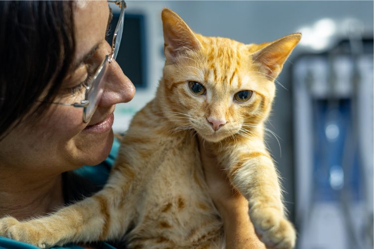
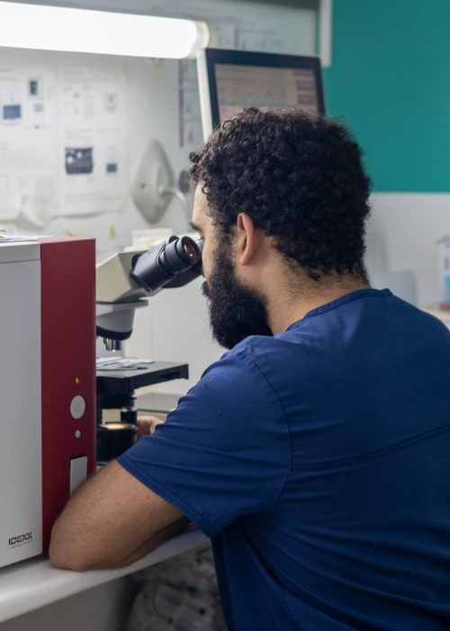
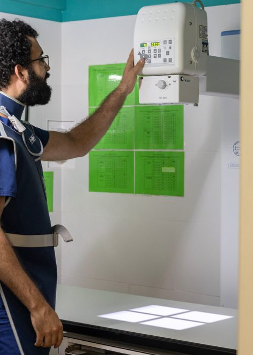
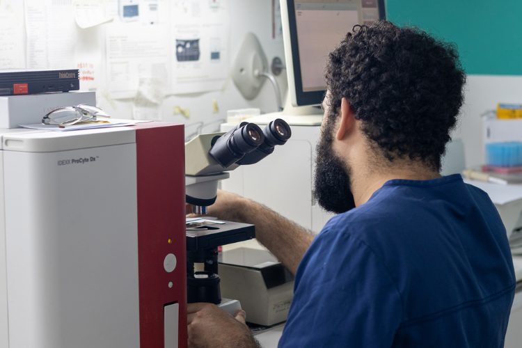
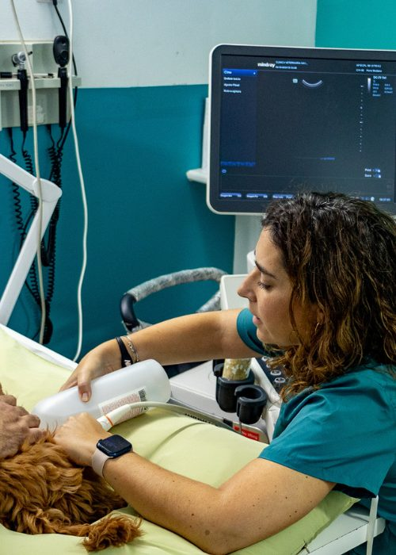
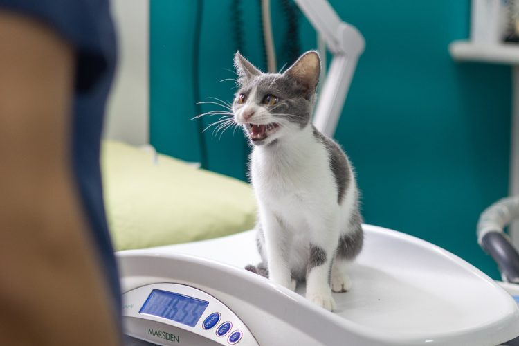

Conoce nuestros servicios veterinarios
Con más de 30 años trabajando con vosotros, ofrecemos servicios veterinarios de calidad sin perder nunca la ilusión de veros a todos: generaciones completas de familias, con empatía y esfuerzo por facilitaros las visitas, las especialidades, el diagnóstico, la prevención y la cirugía.

Cirugía con quirófano propio
Contamos con quirófano equipado, monitorización anestésica constante y un equipo veterinario con años de experiencia para acompañar a tu mascota en las intervenciones más delicadas.
- Anestesia monitorizada
- Quirófano propio y esterilizado
- Seguimiento postoperatorio
Todas las especialidades
Diagnóstico avanzado
Tecnología de imagen y laboratorio propio para detectar cualquier problema con rapidez y precisión.
Analíticas Clínicas y Microscopía
Diagnóstico preciso al alcance de tu mascota. Ofrecemos analíticas avanzadas y microscopía con laboratorio propio para garantizar su salud con rapidez y confianza.
Analíticas Clínicas y Microscopía
Ecografía
Imágenes internas en tiempo real para diagnosticar enfermedades de forma rápida y no invasiva.
Ecografía
Radiología
Diagnósticos precisos con equipos modernos de rayos X para el bienestar de tu mascota.
Radiología
Cardiología
Detectamos y tratamos enfermedades cardíacas para garantizar una vida más larga y saludable a tu compañero.
Cardiología
Oftalmología
Tratamos problemas oculares para proteger la visión y la salud de los ojos de tu mascota.
Oftalmología
Cirugía y hospitalización
Quirófano equipado y supervisión constante para las intervenciones más delicadas.
Cirugía General
Realizamos procedimientos quirúrgicos seguros con profesionales capacitados y tecnología avanzada.
Cirugía General
Esterilizaciones
Procedimientos seguros para el control reproductivo y el bienestar general de tu mascota.
Esterilizaciones
Traumatología y Ortopedia
Tratamos fracturas y problemas articulares para devolver la movilidad y el confort a tu mascota.
Traumatología y Ortopedia
Hospitalizaciones
Supervisión constante con un equipo dedicado para la recuperación de tu mascota.
Hospitalizaciones
Prevención y medicina general
Vacunas, revisiones y cuidados a medida en cada etapa de la vida de tu mascota.
Vacunaciones
Protege a tu mascota de enfermedades prevenibles con un plan de vacunación personalizado.
Vacunaciones
Desparasitaciones
Protege a tu mascota de parásitos internos y externos con tratamientos efectivos y personalizados.
Desparasitaciones
Pediatría
Cuidamos de tus cachorros desde sus primeros días, garantizando un desarrollo sano y feliz.
Pediatría
Geriatría
Atención integral para las necesidades especiales de las mascotas mayores, promoviendo su calidad de vida.
Geriatría
Dermatología
Diagnóstico y tratamiento de problemas de piel, pelo y alergias para un cuidado completo de su bienestar.
Dermatología
Bienestar y atención especializada
Comportamiento, especies poco comunes y todo lo que tu mascota necesita para estar bien.
Etología
Abordamos problemas de comportamiento para mejorar la convivencia y el bienestar de tu mascota.
Etología
Exóticos
Ofrecemos atención especializada para animales poco comunes como conejos, hurones o pequeños roedores.
Exóticos
Tienda Veterinaria
Encuentra productos de calidad, desde alimentos hasta accesorios, para consentir a tu mascota.
Visitar tiendaTienda Veterinaria
Diagnóstico y tratamiento de referencia en Gavà
Tecnología avanzada y un equipo humano que acompaña a tu mascota en cada paso, desde la analítica hasta el quirófano.






¿No sabes qué servicio necesita tu mascota?
Llámanos y te asesoramos sin compromiso.